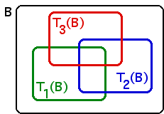

| Take B a compact set large enough that |
| Ti(B) ⊆ B for i = 1, ..., N. |
| This is always possible because for large enough B, the effect of translation will be negligible compared with contraction. |
|  |
| Then |
| B ⊇ T1(B) ∪ ... ∪ TN(B) = T (B) |
| Applying T to this inclusion gives |
| T (B) ⊇ T (T (B)) = T 2(B) |
| Continuing to apply T and combining the inclusions gives |
| B ⊇ T (B) ⊇ T 2(B) ⊇ T 3(B) ... |
| and so |
| B, T (B), T 2(B), T 3(B), ... |
| is a nested sequence of nonempty compact sets. Then |
| A = ∩T k(B) |
| is a nonempty, compact set. |
Return to the proof of the theorem.